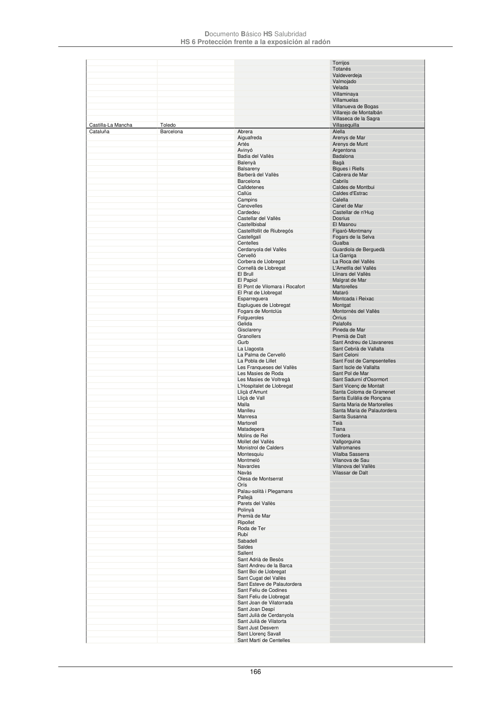

DB-HS Salubridad · edición 2022-06-14 · capa oficial
Documento DB-HS-oficial · SHA-256 del PDF 68df3caacc95f71aee2ec1ba7b2c65ae66155c21e3a8785521b8fdd4fd640d3b
Página física 166 de 184.
Copia fiel del PDF fuente · Fuente oficial
Ficha de la disposición en la fuente oficial
Formato: Texto de la página (Markdown)
Documento Básico HS Salubridad HS 6 Protección frente a la exposición al radón 166 Torrijos Totanés Valdeverdeja Valmojado Velada Villaminaya Villamuelas Villanueva de Bogas Villarejo de Montalbán Villaseca de la Sagra Castilla-La Mancha Toledo Villasequilla Cataluña Barcelona Abrera Alella Aiguafreda Arenys de Mar Artés Arenys de Munt Avinyó Argentona Badia del Vallès Badalona Balenyà Bagà Balsareny Bigues i Riells Barberà del Vallès Cabrera de Mar Barcelona Cabrils Calldetenes Caldes de Montbui Callús Caldes d'Estrac Campins Calella Canovelles Canet de Mar Cardedeu Castellar de n'Hug Castellar del Vallès Dosrius Castellbisbal El Masnou Castellfollit de Riubregós Figaró-Montmany Castellgalí Fogars de la Selva Centelles Gualba Cerdanyola del Vallès Guardiola de Berguedà Cervelló La Garriga Corbera de Llobregat La Roca del Vallès Cornellà de Llobregat L'Ametlla del Vallès El Brull Llinars del Vallès El Papiol Malgrat de Mar El Pont de Vilomara i Rocafort Martorelles El Prat de Llobregat Mataró Esparreguera Montcada i Reixac Esplugues de Llobregat Montgat Fogars de Montclús Montornès del Vallès Folgueroles Òrrius Gelida Palafolls Gisclareny Pineda de Mar Granollers Premià de Dalt Gurb Sant Andreu de Llavaneres La Llagosta Sant Cebrià de Vallalta La Palma de Cervelló Sant Celoni La Pobla de Lillet Sant Fost de Campsentelles Les Franqueses del Vallès Sant Iscle de Vallalta Les Masies de Roda Sant Pol de Mar Les Masies de Voltregà Sant Sadurní d'Osormort L'Hospitalet de Llobregat Sant Vicenç de Montalt Lliçà d'Amunt Santa Coloma de Gramenet Lliçà de Vall Santa Eulàlia de Ronçana Malla Santa Maria de Martorelles Manlleu Santa Maria de Palautordera Manresa Santa Susanna Martorell Teià Matadepera Tiana Molins de Rei Tordera Mollet del Vallès Vallgorguina Monistrol de Calders Vallromanes Montesquiu Vilalba Sasserra Montmeló Vilanova de Sau Navarcles Vilanova del Vallès Navàs Vilassar de Dalt Olesa de Montserrat Orís Palau-solità i Plegamans Pallejà Parets del Vallès Polinyà Premià de Mar Ripollet Roda de Ter Rubí Sabadell Saldes Sallent Sant Adrià de Besòs Sant Andreu de la Barca Sant Boi de Llobregat Sant Cugat del Vallès Sant Esteve de Palautordera Sant Feliu de Codines Sant Feliu de Llobregat Sant Joan de Vilatorrada Sant Joan Despí Sant Julià de Cerdanyola Sant Julià de Vilatorta Sant Just Desvern Sant Llorenç Savall Sant Martí de Centelles

Datos candidatos: compruebe celdas y notas en el PDF.